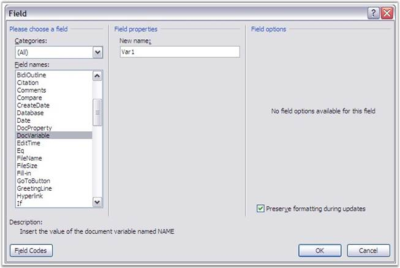

A document variable is stored as part of a document or template. Document variables store information about the document. These are useful for document automation because they allow the programmer to store information for future use. For example, some firms use document variables to store Client and Author information, for use in the footer or field code purposes.
Essential DocIO provides support to work with these document variables. You can get or set the variables by using the variable name or index.
Document variables are accessible through the IDocument.Variables property.
Variables are added to the document by using the IDocument.Variables.Add(string variableName, string variableValue) method. Variables are removed from the document by using the IDocument.Variables.Remove(string variableName) method.
These fields could be referred to, in other parts of the document easily. For example, use the "IWParagraph.AppendField(string fieldName, FieldType type)" method, where the 1st argument is the name of the document field and the 2nd argument is FiledType.FieldDocVariable.

Figure 55: Document Variable Field
|
[C#]
WordDocument doc = new WordDocument(); doc.Open("Sample.doc"); DocVariables v = document1.Variables;
//Add a variable v.Add("var1", "Author Name");
//Add / modify variables: v["var2"] = "change name";
Console.WriteLine("Number of Variables:" + document1.Variables.Count.ToString()); Console.WriteLine("Variable Name:" + document1.Variables.GetNameByIndex(0)); Console.WriteLine("Varaible Value:" + document1.Variables.GetValueByIndex(0));
doc.Save("SampleModified.doc"); |
|
[VB.NET]
Dim doc As WordDocument = New WordDocument() doc.Open("Sample.doc") Dim v As DocVariables = document1.Variables
'Add a variable v.Add("var1", "Author Name")
'Add / modify variables: v("var2") = "change name"
Console.WriteLine("Number of Variables:" + document1.Variables.Count.ToString()) Console.WriteLine("Variable Name:" + document1.Variables.GetNameByIndex(0)) Console.WriteLine("Varaible Value:" + document1.Variables.GetValueByIndex(0))
doc.Save("SampleModified.doc") |